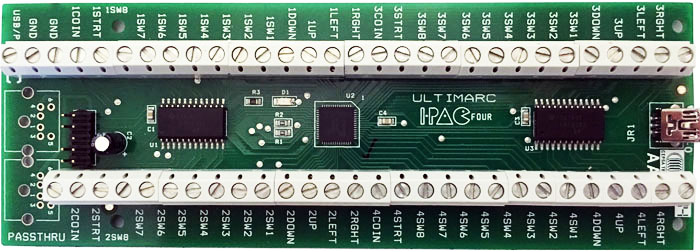

I-PAC 4
Manufacturer: Ultimarc
Note that the I-PAC 4 can only handle switches such as buttons and joysticks. The spinners and trackball are optical devices and thus require a controller that can handle optical type devices.
